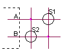
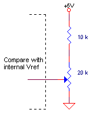

April 2003
Switches
Often we're so creative in putting functionality into PIC's, that they always seems to have too little IO-pins. On the other hand, sometimes we've so little space that we want to use as little external components as possible.
Other important parameters to choose for the optimal switch circuits are number of switches, kind of available IO-pins and the necessity of decoding multiple keys.
On this page I've collected a number of circuits, concerning the connection of switches to PICs.
If anyone has other ideas, I'm glad to put his or her idea (with a link) on this page.
Also "inefficiënt" ideas are welcome !! You should realize how many people will come up with the same inefficiënt idea and will put a lot of energy in the design to discover what you already had discovered.
To compare the performance of the different circuits, most circuits are compared with an standard matrix circuit having an equal amount of lines, that is having N rows and N columns. The following parameters are given
My favourites until now are Extended Matrix (2) or Analog Comparator (2) for many switches (depending on the available kind of ports) and Special (1) for only a few switches.
|
Basic (1 line) |
Matrix |
Special |
RC-time |
|
|
|
|
#NKeys = 2*N switches N = 1 / 2 / 3 / 4 ==> 2 / 4 / 6 / 8 switches Multiple keys can be decoded. If no internal pull-up resistor present, connect an external pull-up resistor (10 kOhm ... 100 kOhm). Debouncing should be done in software and or using a smitt-trigger input ! In some documents it's suggested to use a capacitor across the switch to reduce debouncing, this will do only harm because the edges of the signals are made slower, which is bad for digital circuits. |
|
#NKeys = N*N switches N = 1 / 2 / 3 / 4 ==> 1 / 4 / 9 / 16 switches Multiple keys can be decoded. Pull-up or pull-down resistors are necessary, which are available on the B-port of post PIC-devices. |
|
#NKeys = 2N * 2N - 2N switches N = 1 / 2 / 3 / 4 ==> 2 / 12 / 30 / 56 switches Multiple keys can not be decoded (just detected) Pull-up or pull-down resistors are necessary, which are available on the B-port of most PIC-devices. For N=1 (2 switches) multiple switches can be fully resolved (but in fact you'll have the same circuit as "Extended Matrix Switch (2)" ). For higher values of N, some multiple switch combinations can be resolved unambigious, others not. In general use this design only when there's only 1 keypress at a time. The software should then check if just one key is pressed, otherwise wait till only 1 key pressed. Below is another extended matrix which can resolve all multiple key combinations. |
||||||||||
|
Decoding 1 x 1
X = don't care, doesn't contain information |
|
2N * 2N - 2N switches #NKeys = N = 1 / 2 / 3 / 4 ==> 2 / 12 / 30 / 56 switches Multiple keys can be unambigious decoded. Pull-up or pull-down resistors are necessary, which are available on the B-port of most PIC-devices. There's a JAL library available, which is able to decode upto 5 lines (20 keys). |
||||||||||||||||||||||||||||||||||||||||||
|
full IO signals for 1 x 1
high = high impedance with pullup (or "1") X= don't care (contains no information) |
Decoding 1 x 1
 |
|||||||||||||||||||||||||||||||||||||||||
|
Decoding "1.5" x "1.5"
|
Decoding 2 x 2
|
|||||||||||||||||||||||||||||||||||||||||
|
||||||||||||||||||||||||||||||||||||||||||
|
4N switches #NKeys = N = 1 / 2 / 3 / 4 ==> 4 / 8 / 12 / 16 switches multiple keys cann't be detected. For N<4 this circuit is even more effective than a normal matrix, but it needs a number of external resitors. The sensibility to noise of this cicuit is larger than other cicuits.. The port used must be able to act both as an input and output. The working is based on the parasitic capacitance of the port. Decoding is done as follows:
If both readings were low, S2 is pressed If both readings were high, S1 is pressed If both readings were different nothing was pressed By choosing one of the resistors much larger than the other, you can determine which key has precendence if both keys are pressed. |
|
|
#NKeys = 16*N switches N = 1 / 2 / 3 / 4 ==> 16 / 32 / 64 / 128 switches Multiple keys can not be detected and will give a strange result. This circuit can also be used to read a potmeter value (see the most right circuit).
(the potmeter cicuit will be soon evaluated by me, and a JAL example will become available) |
__ |
|
#NKeys = 16*N switches N = 1 / 2 / 3 / 4 ==> 16 / 32 / 64 / 128 switches In case of multiple keys, only the lowest key will be found. |
|
An ingenius circuit designed by Vasile Surducan, on his site there's more information and a JAL program for the PIC16F84. I haven't studied the details of this circuit.
|
|
An idea of Colin Mitchell form Talking Electronics . Click on the image to go to his site. The decoding is based on measering the RC-time of the resistor of 47k en the capacitor of 1 uF, which should give a shorter time than a single human touch of switch B. The circuit cann't handle multiple keys. Switch A will always produce a short puls, switch B will produce a long puls (as long as the key is pressed). |
|
Another idea of Colin Mitchell form Talking Electronics . This circuit also relies on the different RC-times, depending on how many resistors are short circuited by a switch. The circuit cann't handle multiple keys. Click on the image to go to his site. You als can find the routines for the PIC16F84. |
From Dave Dilatush
How about operating a keypad with nothing more than a single PIC A/D
input pin?
The diagram below shows how this can be done, by connecting the
row/column lines of the keypad to resistors so that each key (the X's in
the diagram below) results in a different resistance value. This
resistance is connected, along with a load resistor (the 22K shown
below), in a voltage divider between Vcc and ground; each key gives a
different voltage, thus a different A/D reading.
I didn't dream this up on my own, BTW, so I can't take "challenge"
credit for it; I saw it about a year ago in the Design Ideas column in
one of the electronics rags (either EDN or Electronic Design, I forget
which). It should work, even if it is a little unusual...
X-------X-------X-------X----------+--Vcc
| | | | |
| | | | |
X-------X-------X-------X---4.7K---+
| | | | |
| | | | |
X-------X-------X-------X---10K----+
| | | | |
| | | | |
X-------X-------X-------X---15K----+
| | | |
| 1.2K 2.4K 3.6K
| | | |
+-------+-------+-------+--> To PIC A/D Input
|
22K
|
GND
Multiple keys pressed simultaneously is a problem with this design.
For example, if you press the top left key in the diagram I posted then
the output of the voltage divider is Vcc no matter what other keys you
push. Pushing other combinations of keys together will give you odd
voltage levels that could be misinterpreted, and I don't think any
amount of A/D resolution could fix that, especially since the resistors
themselves have tolerances and an allowance has to be made for that.
from David Harris
I was thinking.
Can you add another IC??, or It must be with the PIC only?.
I think that if you ad an 74LS138, you can scan 4 rows of the keyboard
with only 2 pins on the IC and the extra cost is still very low (if this is
the case :-)
so we can imagine this:
PIC - DISPLAY - 4x4 Keyb.
--------------------------------------------------------
RB0 E none
RB1 R/S none
RB2 none D0 (74LS138)
RB3 none D1 (74LS138)
RB4 B4
RB5 B5
RB6 B6
RB7 B7
R/W is not really needed (I am counting that you are trying to use an
intelligent
LCD) because R/W is only necessary to read the internal Ram or the status but
if you calculate the time it will work perfect, I have several proyects
working without
using the R/W, just tied it to the Write level and that's all.
The Rows controlled by 74LS138 must be feeded via resistor, at least 1K, to
the
push buttons, so when you set the RB4-7 to Outputs to control the display and
someone push a button, nothing wrong will happens.
now without the extra 138, I don't see how can you do that, the main problem
is the E (Display enable), I can't imagine how to solve it in 8 bits
without the
138, sorry.
some other unsorted newsgroups items from a discussion about 4*4 matrix
> With a 4 x 4 matrix of SPDT switches to work with? Show me.
In theory, this is do-able :
-----+---- R ----x-x-x-x
+---- R/2---x-x-x-x
+---- R/4---x-x-x-x
+---- R/8---x-x-x-x
| | | |
---+-------0-----+ | | |
+----1R/32------+ | |
+----2R/32--------+ |
+----3R/32----------+
Bottom Row == R/8, R/8+R/32, R/8+2R/32, R/8+3R/32,
Next up is == R/4, R/4+R/32, R/4+2R/32, R/4+3R/32,
..
Top Row == R, R+R/32, R+2R/32, R+3R/32,
And this needs to resolve changes to R/32, or ~3%.
Looks like 1% resistors, and maybe an EE calibrate mode, to
align the ADC, and initial resistor values.
In SMD devices, and working with just two values,
this would be 15 resistors - similar to a 1 of 16 keypad, but
with the advantage of just 2 stock values, and fewer pins on the keypad.
Could suit the miniature uC, with ADC, like Cygnal C8051F33x,
and ATTiny15... (etc)
-jg
"Stef Mientki" <s.mientki@ids.kun.nl> wrote in message
>
... snip ...
>
> Ok, back to technics, for use with the Lego robot (yes toys !) I collected
> some ideas (not all of my own ;-) here
>
http://baserv.uci.kun.nl/~smientki/Lego_Knex/Lego_electronica/PicProg/Pic_switch.htm
*Very* interesting page. I especially like the triangular
matrix. The techniques are quite general, and are not PIC
specific.
In the sloppy analog theme, if a cheap 1:2:4 ratio current source
were available, then switching into a common load resistor would
give 3 switches (in any combination) per input line. Even 1:2:4:8
might be possible, for 4 switches, but I would consider it snaky.
The current sources can be built from a matched transistor set,
with common base. If well enough matched they can have common
emitters, and only the transistor collector size matters. This is
the current mirror scheme used in linear IC's.
Example:
1 ma ----------- S1 ---------+------> 0, 0.5, 1.0, 1.5,
| 2.0, 2.5, 3.0, 3.5 V
2 ma ----------- S2 ---------+
|
4 ma ----------- S3 ---------+---- 500 ohms -----< GND
I used this scheme almost 40 years ago to read out 2421 weighted
decimal registers on a single line. You can multiplex multiple
readouts by enabling one of the sets of current generators. So a
custom chip, using 2 inputs to select 1 of 4 generators, having 4
* 3 = 12 output pins, could decode 12 switches into 1 input line.
Total CPU pin usage = 3. However the current generator mechanism
adds too much cost and wiring for todays usage.
--
Chuck F (cbfalconer@yahoo.com) (cbfalconer@XXXXworldnet.att.net)
Available for consulting/temporary embedded and systems.
(Remove "XXXX" from reply address. yahoo works unmodified)
mailto:uce@ftc.gov (for spambots to harvest)
"Cass" <cassegrainian@galaxycorp.com> wrote in
news:9uu2jr$okj$0@dosa.alt.net:
> I am looking for a decoder for a 4 by 4 keypad. All I can find is a
> 74C922 and can't even find much on that.
> Is there a newer, better chip out for this kind of a function? I don't
> want to implement the decoding by using a PIC or use 8 pins of a port.
I'm surprised nobody suggested a DTFM encoder and an ADC pin...
Jeff.
-----= Posted via Newsfeeds.Com, Uncensored Usenet News =-----
http://www.newsfeeds.com - The #1 Newsgroup Service in the World!
Check out our new Unlimited Server. No Download or Time Limits!
-----== Over 80,000 Newsgroups - 19 Different Servers! ==-----
Roger Johansson wrote:
>
> William L. Bahn wrote:
>
> > Or, if you have a fast enough processor relative to your scanning period,
> > you can play a game (but it requires quite a few passives though probably
> > not more than a conventional technique would). You can place a different
> > resistor (or capacitor) at each switch and then use the two wires apply a
> > step input and measure the time constant (or a time measurement related to
> > the time constant). There are a number of problems with this approach
>
> I have thought about this lately. Most switches are too expensive, heavy and
> big, so I have thought about how the modern machines have developed.
>
> Today most machines have as few buttons as possible, and most buttons have
> multiple purposes. Multi-position switches are too expensive, only the
> cheap push-button type is used.
>
> I thought about using a pot as a switch, a step pot for volume control even
> has distinct mechanical positions. A row of comparators could tell which
> position the switch is in and give steering signals to the rest of the
> circuitry.
>
> Or a cpu could use an A/D function to decide what position the pot is in, to
> give the intended function.
---
It's _much_ easier to use a detented rotary switch with quadrature
output and a momentary pushbutton switch on the shaft than to screw
around with what will eventually become noisy and unreliable.
Just as an aside,on one of our products I used a single 4X4 keypad to
input A-Z, 0-9, up/down vertical scroll, left/right horizontal scroll,
unconditional jump to a menu, and an ENTER function.
---
John Fields
Professional circuit designer
I read in sci.electronics.design that John Fields <jfields@austininstrum
ents.com> wrote (in <3C14D8DA.7369EC47@austininstruments.com>) about '4
X 4 matrix keypad decoder', on Mon, 10 Dec 2001:
>Just as an aside,on one of our products I used a single 4X4 keypad to
>input A-Z, 0-9, up/down vertical scroll, left/right horizontal scroll,
>unconditional jump to a menu, and an ENTER function.
Well, just for the record, if you dedicate one row to be 'golden keys' -
mode setters, and allow anything from one to four to be pressed
simultaneously, you get 4! x 12 = 288 possible functions. I suppose the
real maximum number requires more buttons pressed simultaneously than
most people have fingers. And a pad with 'only' 24 modes is not suitable
for human beings, anyway. (;-)
--
Regards, John Woodgate, OOO - Own Opinions Only. http://www.jmwa.demon.co.uk
After swimming across the Hellespont, I felt like a Hero.
I'm surprised noone has suggested using E-Lab's EDE1144 4x4 matrix keyboard
encoder chip!
It's real close to being a 923 clone. Seems to be a c84 'in disguise'.
I've used the 923 for years, but was always 'upset' over the price,esp. when
converted to CDN funds!
--
Jay
from Greensville, Ontario
"Jeffrey A. Wormsley" <jwormsley@debitek.com> wrote in message
news:Xns91736466A921Djwormsleyatdebitekdo@128.242.172.154...
> "Cass" <cassegrainian@galaxycorp.com> wrote in
> news:9uu2jr$okj$0@dosa.alt.net:
>
> > I am looking for a decoder for a 4 by 4 keypad. All I can find is a
> > 74C922 and can't even find much on that.
> > Is there a newer, better chip out for this kind of a function? I don't
> > want to implement the decoding by using a PIC or use 8 pins of a port.
>
> I'm surprised nobody suggested a DTFM encoder and an ADC pin...
>
> Jeff.
>

{kind=link}
{kind=link}
{kind=link}
{kind=link}
{kind=link}